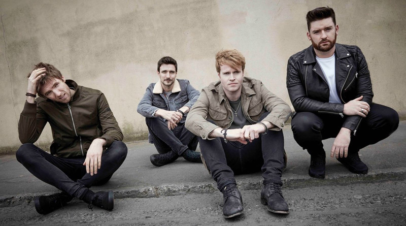
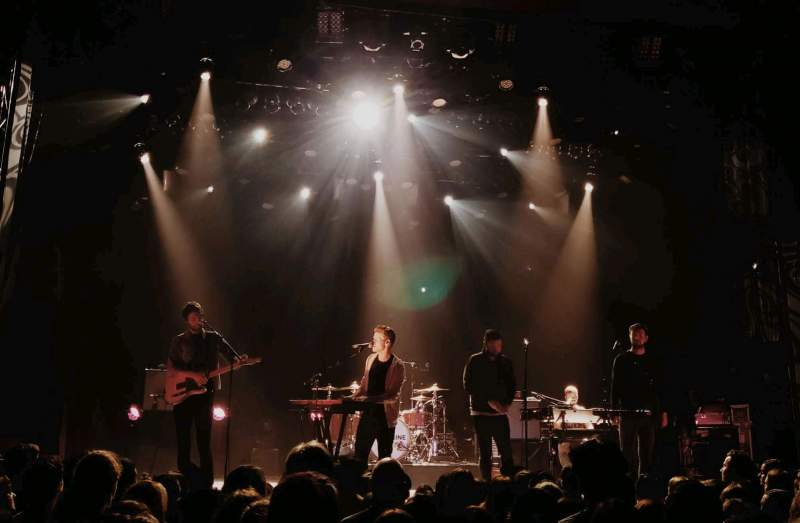

El día a día de la Banda
Last November, a jet-lagged Kodaline were driving into Pune, India, when a motorcyclist frantically flagged at them to pull over. Baffled by his urgency, they stopped at the side of a busy road. The reason? The man was a hardcore Kodaline fan and wanted to get a selfie with frontman Steve Garrigan. “We made his day or even his year,” laughs Garrigan. “He was so over the moon, it was great.”
Such scenes were replicated throughout their first tour of Asia. In India they headlined the NH7 Weekender in front of 22,000 people. Their first show in South Korea sold-out within a minute. A music teacher in Indonesia posted a video of his entire class performing their breakthrough favourite ‘All I Want’. And whether they were arriving in Malaysia, Singapore or Vietnam, they’d be met by fans thrusting gifts upon them.
That devotion is an extension of the huge appeal they’ve demonstrated at home. Kodaline’s ability to capture intense emotions in arena-scaled songs gives their music a universal quality. It’s been proven already, with three number one albums in Ireland and two top ten hits in the UK. 2019 alone saw them add 283 million streams at Spotify, spread between 79 countries, despite not releasing any new material.
Back home in Dublin, they sold-out two 15,000 capacity shows at St. Anne’s Park before playing to another 60,000 at Electric Picnic. The festival reached an emotional crescendo when Cranberries’ guitarist Noel Hogan joined Kodaline for ‘Zombie’, a whole-hearted tribute to the late Dolores O’Riordan. It also represented Kodaline going back to the beginning. Their first arena show came when the Cranberries invited them to open a gig in Paris back in 2012. All of which would’ve seemed impossible during the band’s modest early days in Dublin. Garrigan used to play gigs in local pubs, while he and guitarist Mark Prendergast used to busk together on Grafton Street. But Kodaline dreamed big, even if their rehearsal space was an abandoned school.
“We’ve seen what it’s like to have no following, so we’re very grateful that the Irish have taken to us,” reflects Garrigan. “It’s our home and a place that we love.”
While touring kept Kodaline in the public eye in 2019, they dedicated much of the year to making new music. Their previous album, 2018’s ‘Politics of Living’, saw them travel around to work with various producers and songwriters. This time around they took a different approach. The majority of the process revolved around the four of them in their modest recording space in Dublin. And rather than work on it continually, they kept the sessions fresh by breaking for weekends and short tours.
With bassist Jason Boland leading the production side of things, this streamlined process took them back to their roots. That method was only intended to a trial. “But we soon realised it was working really well,” says Prendergast. “The approach on our last album was a learning curve for us, but this was really natural.”
The mission, says Garrigan, was to focus on the emotion that informs many Kodaline fan favourites. “The main thing this time was to capture those emotions through everything. And we all sing, so we wanted to use a lot of harmonies and play to our strengths.”
Those strengths are immediately apparent in the album’s first single ‘Wherever You Are’. Opening with Garrigan’s expressive topline backed by little more than swirling vocal harmonies, Kodaline build up the track towards its dramatic denouement. “‘Wherever You Are’ is about loved ones staying in your heart and mind even when they’re not with you,” he explains. “I wrote it specifically for my girlfriend as due to being away on tour all the time, we never really get to see each other.”
Kodaline will often spend over half the year away on tour. When they’re back home, they’re usually planning, writing or recording the next record. It can be tough but they’re content with the sacrifice, as Boland explains.
“Our wives and girlfriends know this is what we’ve wanted to do since we were kids. We’re living our dreams and they’re 100% supportive. They’re happy that we get to do want we want to do for a living, because that’s rare.”
Garrigan wrote another new track ‘Sometimes’ while stewing over the aftermath of a bad show. While it’s written about a very specific experience, it’s still about a relatable emotion: losing your perspective over a challenging moment, and then finding ways to cope with your anxiety. It’s a topic that Garrigan has recently shared, opening up about his struggles with panic attacks. There’s no easy answer, but addressing such issues is a positive start. “There’s an Irish mentality that men can’t show emotions and that’s bullshit.”
While Garrigan and Prendergast’s experiences of anxiety and depression feed into some of the new songs, one of the highlights is pure fiction. Possessing a 1950s Rat Pack feel with sumptuous vocal harmonies, ‘Last Day on Earth’ explores the tale of a couple vowing to stay together as the world hurtles towards its final apocalypse.
“Our music is now as emotional as it can be,” says drummer Vinny May with contagious enthusiasm. “We’re really confident and optimistic about this record.”
That emotion also spreads far beyond the band themselves. Named after an early Kodaline song, the High Hopes choir uses music as a way for homeless people to change their lives through music. More recently, Voices of Service, an American soul group consisting of military veterans, have released a gospel version of ‘Brother’. And that early hit ‘All I Want’ is still being discovered, with countless fans embracing it as a song that helps them through a grieving process.
That’s the power of Kodaline. They’re four regular people who explore topics that everyone experiences. That also inspires a wider community in their following, with fans becoming life-long friends with people they meet at the band’s shows.
“We want to do this for the rest of our lives,” concludes May. “We want to continue to grow and reach a wider audience. That ambition has been there from the start and is still there now.”
There’s a cheeky glint in his eye and laughter all-round as he summarises the Kodaline story so far. “We’re lucky fuckers!”
fuente:pagina oficial kodaline https://kodaline.com/